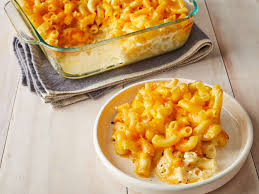

Homestyle Mac and Cheese Bake

Description
Who doesn't love baked mac and cheese? a wonderful classic that's warm and cozy.
this is my recipe for a fairly simple one.
Ingredients
- 2 cups milk
- 2 tbsp flour
- 6 cups of shredded cheese
- 1 pound of macaroni
Steps
- preheat the oven to 350 degrees
- boil and drain the macaroni
- With the milk and flour make a blonde roux
- slowly add the cheese in to make a sauce leaving some aside to top the macaroni
- combine the cheese sauce and mac in a dish and bake for an hour
- top with the remaining cheese at the last 10 to 5 minutes, cool and serve.